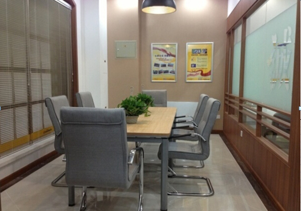

好旺角房屋（大连）
“好人，好房，好旺角”大连好旺角房屋经纪有限公司成立于1999年3月6日，是东北地区最大的房屋经纪企业，大连市首批经过房产局资质认定的房屋中介机构。
好旺角房屋历经十五年的艰苦奋斗，现已成为东北地区历史最悠久、规模最大、资源最丰富、管理最规范、交易最安全的专业化龙头企业。以大连为根据地，辐射北京、沈阳，提供二手、一手、租赁、按揭金融等一条龙服务，旨在打造一个全国性的房地产综合服务集团。
大连好旺角现有门店百余家，员工2000余人，十余年来，服务过的客户累计达15万以上。十余年来市场占有率一直保持行业第一，连续多年保持在30%以上，即大连每成交三套房屋，就有一套是在好旺角房屋成交的。
好旺角房屋自创建以来，始终秉持"正心诚意，修齐治平"的经营理念。致力于为顾客提供"安全、快捷、专业"的优质服务。凭借好旺角房屋自身坚韧的努力，获得了社会各界的高度评价。好旺角房屋在企业发展壮大的同时，不忘积极努力地回报社会：捐助希望小学，捐助贫困大学生，捐助受灾地区，捐助"珍珠生计划"。
新十年，新征程。好旺角房屋一直致力于提升行业价值，主动求新求变，突破自我，引领行业发展。2011年好旺角与国际知名软件集团IBM达成战略合作，革新服务体系；推出二手房过户体验中心，提升客户体验；好旺角官方网站改版正式上线，400热线正式推出，2013年，买卖行情分析的楼市K线图，业主反馈表，一张房源纸，淘宝池改革，重点房源面访，Call客上线，一健发布上线，放心房假一罚百行动等等一系列服务项目和产品不断推出，好旺角房屋的服务工作细化到每一个房主和客户，让每一个选择好旺角的人，都能够感受到好旺角专业的服务品质。好旺角进入新的快速发展轨道，同时也是不断深化服务品质之路。
展望未来，好旺角房屋将一如既往的提供顾客最优质的中介服务，提供员工更多、更高、更好的发展平台，继续促进行业的进步与发展。坚持好旺角房屋的理念和文化，不断的努力，实现好旺角房屋"百年老店"的宏伟基业！
